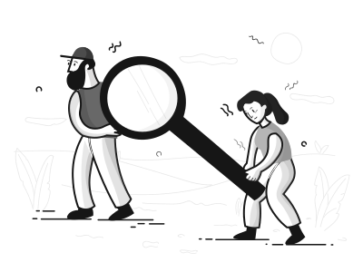
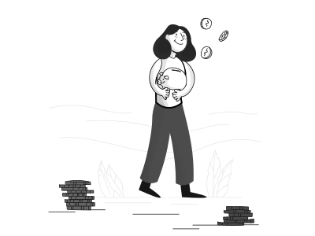
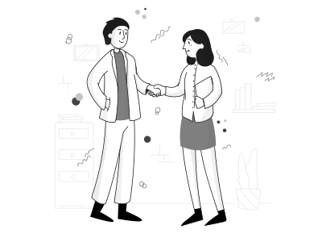
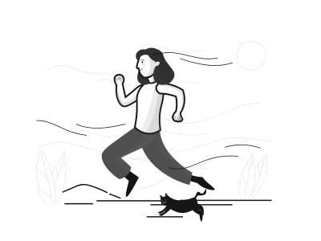

Design
Bureau
Design Bureau
We design user interfaces
and support teams
without designers
For whom the Bureau works
Product teams with fewer than 4 developers
Product teams that need a part-time designer
Startups to test hypotheses
For example
A startup is testing a hypothesis and doesn’t need a full-time designer yet. The startup contacts the Bureau, and one of our designers spends 30% of their work time on the task. The startup manager doesn’t need to hire, onboard, or manage a designer, or provide tasks and evaluations. They get a completed task just as if it were done by a designer in-house.
Who Pays
The Bureau doesn’t have its own salary budget, so you need to allocate funds for the task. At the end of each month, we distribute the salary costs of our designers among the projects they worked on.
What Tasks We Take On
Anything related to UI design. Anything that users will interact with. For example, designing a feature in a product or creating a clickable prototype to test a hypothesis.
We Don’t Do
- websites and landing pages — web-studio does it better
- illustrations, banners, brand styles, logos — these are better handled by communication designers
- user research, usability testing – no one does it better than Emilia and the UX-lab
- development and coding. The Rangers can help with that
How to Assign a Task
Email Ksenia Ilinykh with answers to these questions:
- Project code for allocating salary costs.
- What needs to be done? What problems in the product need solving?
- Why is this task necessary? What happens if it’s not done?
- Task scope. Try to estimate the designer's effort (in days/weeks/months).
- What is ready for design? How complete is the task analysis? Were there any research, usability tests, surveys, or user feedback?
- Does the task have an external deadline? What dictates this deadline? What happens if you miss it?
We will discuss the task within the Bureau, and I will write back to you about who and when can handle it. You will then communicate directly with the designer.
When We Take on a Task
Usually, all Bureau designers are busy with current tasks, so we won’t be able to take on a new task immediately. Come to us in advance: a few weeks or a month ahead, and we will plan everything. If you have an urgent small task, write to us, and maybe we can figure something out.
How We Work on a Task
At the first meeting, you meet with the designer and discuss the task. After that, the designer may have questions, which are discussed via email, chat, or in another meeting. The designer will inform you when the next check-in will be: this is where the conceptual solution is discussed. At the next check-in, the details are discussed.
There can be many such check-ins, depending on the task, but the iterations happen closely together.
When the designer finishes the design, they organize a presentation. Usually, this is a meeting where they talk about the task and solution, showing what was achieved. Developers can be invited to this meeting.
That’s not all
After the task is handed over to development, the designer’s work doesn’t end. During development, design questions may arise, or details may be discovered that weren’t evident at the start. This is normal, and therefore Bureau designers support tasks during development: answering questions and refining details if necessary.
We also want to control the result. The designer’s responsibility is a working product, not just pretty images. During the QA phase, involve the designer to review the implementation and ensure everything is good.